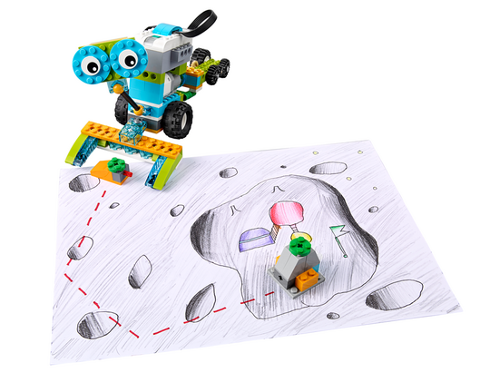

Assessment does not have to encompass all of these skills, an emphasis can be placed on the skills that are most relevant to you and your pupils.
Enable Pupils to Find Patterns (Generalisation)
A pattern is something that can be applied in the same way in different situations. Here are some patterns that your pupils should consider for this project:
Rotate the robot 90 degrees left to make it move in the left direction
Rotate the robot 270 degrees left to make it move in the right direction
Control the motion forwards
Enable the Pupils to Program a Sequence of Actions (Algorithmic Thinking)
The pupils will code a sequence of actions in order to get their robots moving. To help with their programming, ask your pupils to describe the path that they are planning to use. They should say something like, ‘the robot will go there, turn left, go there, turn right again and stop’.
Have them document this process using the Documentation tool.

Enable the Pupils to Improve Their Solution (Evaluation)
The pupils will test their programs and adjust their parameters in order to improve efficiency and precision. To help with their programming, ask your pupils to identify which block in their program they need to adjust.
Programming Help
Make the Robot Move in Left Direction
The pupils may need to adjust the time depending on their motor and battery level.
Make the Robot Move in Right Direction
To turn the robot 90 degrees right, students need to program the robot to turn 270 degrees left. They may need to adjust the time depending on their motor and battery level.